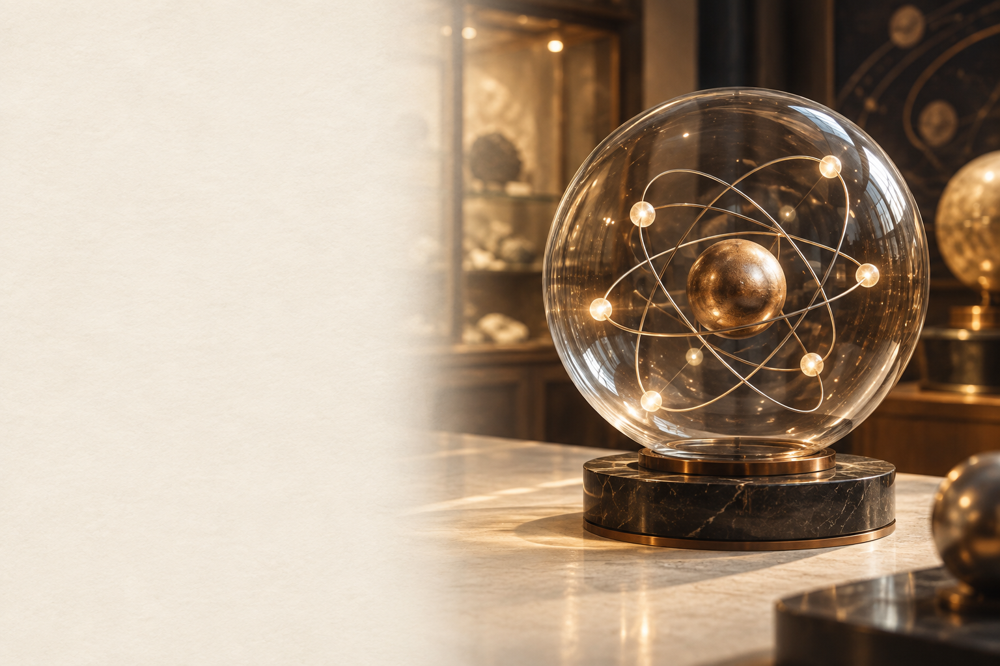

原子の構造と
イオン
＋と−になる理由を、動きで考える。

Na⁺とCl⁻。符号の違いはどこから？
Na⁺ Cl⁻
＋と−の電気を 帯びている
原子の中に 手がかりがある
食塩水にはNa⁺とCl⁻がある。
原子の中を見て、理由を考える。
原子は、原子核と電子からできている
原子の内部を 拡大すると？
中心に 原子核
原子核の周りに 電子
中心の小さな部分が原子核。
その周りに電子がある。
原子核の中には、陽子と中性子
原子核を さらに拡大
陽子：＋の電気
中性子： 電気を帯びない
陽子は＋の電気をもつ。
中性子は電気を帯びない。
電子は、−の電気をもつ
電子の電気は？
電子：−の電気
陽子1個の＋と 電子1個の−は 同じ大きさ
電子は−の電気をもつ。
＋1個と−1個で、電気は差し引き0。
陽子と電子が同じ数なら、原子は中性
陽子11個 電子11個
＋11 と −11
全体の電気は0 電気的に中性
陽子の数と電子の数が等しい。
原子全体では、電気を帯びない。
動くのは電子。原子核は変わらない
外側の電子に 注目しよう
この−の粒子が 出入りする
陽子の数は 変わらない
イオンになるとき、電子が出入りする。
原子核の陽子・中性子は変わらない。
電子を1個失うと、どうなる？
Na原子 陽子11・電子11
電子1個が 外へ移動
陽子11・電子10 ＋が1個分多い
Na⁺ ナトリウムイオン
−の電子が1個、 外へ移動する。
陽子は11個のまま。 全体は＋1。
電子を失うと、 陽イオンになる。
Na⁺は、＋を足した原子？
陽子が 増えたのだろうか？
陽子：11 → 11 電子：11 → 10
−が1個減って 全体が＋1
増えたのは陽子ではない。
電子が減ったため、＋が余る。
電子を1個受け取ると、どうなる？
Cl原子 陽子17・電子17
電子1個が 中へ移動
陽子17・電子18 −が1個分多い
Cl⁻ 塩化物イオン
外から−の電子を1個受け取る。
陽子は17個のまま。 全体は−1。
電子を受け取ると、 陰イオンになる。
Cl⁻になっても、原子核は同じ
何が 変わった？
陽子：17 → 17 電子：17 → 18
−が1個増えて 全体が−1
陽子の数は17個のまま。
電子が増えたため、−が余る。
覚えること：電子とイオンの符号
電子は −の粒子
電子を失う → 陽イオン（＋）
電子を受け取る → 陰イオン（−）
−を失うと、全体は＋になる。
−を受け取ると、全体は−になる。
確認：電子を取られたら、何イオン？
電子を1個 取られたら？
電子1個が 外へ移動
＋が1個分多い
陽イオン
失うのは−の電子。
＋と−の数を比べる。
電子を取られると、 陽イオン。
確認：電子を与えられたら、何イオン？
電子を1個 与えられたら？
電子1個が 中へ移動
−が1個分多い
陰イオン
与えられる＝電子を受け取る。
増えるのは−の電子。
電子を与えられると、 陰イオン。
電子を2個失うと、符号は？
Mg原子 陽子12・電子12
電子2個が 外へ移動
陽子12・電子10 ＋が2個分多い
Mg²⁺ マグネシウムイオン
−の電子を2個失う。
陽子は12個のまま。 全体は＋2。
Mg²⁺の2＋は、 ＋2の電気。
電子を2個受け取ると、符号は？
O原子 陽子8・電子8
電子2個が 中へ移動
陽子8・電子10 −が2個分多い
O²⁻ 酸化物イオン
−の電子を2個受け取る。
陽子は8個のまま。 全体は−2。
O²⁻の2−は、 −2の電気。
右上の数字と、前の数字は違う
Mg²⁺ と 2Mg²⁺ どう違う？
Mg²⁺ ＋2のイオン1個
2Mg²⁺ ＋2のイオン2個
右上の2＋は、1個の電荷。
前の2は、イオンの個数。
電子の出入りを、式でも表そう
電子を e⁻ と 書くと
Na → Na⁺ ＋ e⁻
Cl ＋ e⁻ → Cl⁻
失った電子は、式の右に書く。
受け取る電子は、式の左に書く。
表から、粒子の電気を読み取ろう
陽子は＋、電子は−。それぞれの個数を比べる。
| 粒子 | 陽子の数 | 電子の数 |
|---|---|---|
| A | 11 | 10 |
| B | 10 | 10 |
| C | 9 | 10 |
陽子と電子の数を 比べよう
A：＋1 B：電気的に中性
C：−1
陽子が1個多いAは、＋1。
電子が1個多いCは、−1。
陽子12個のMg²⁺。電子は何個？
陽子は＋、電子は−。それぞれの個数を比べる。
| 粒子 | 陽子の数 | 電子の数 |
|---|---|---|
| Mg²⁺ | 12 | ？ |
陽子12個 全体の電気は＋2
＋が2個分 多いということ
電子は10個 12 − 10 ＝ 2
＋2なら、電子が陽子より2個少ない。
電子の数は12−2＝10個。
陽子17個のCl⁻。電子は何個？
陽子は＋、電子は−。それぞれの個数を比べる。
| 粒子 | 陽子の数 | 電子の数 |
|---|---|---|
| Cl⁻ | 17 | ？ |
陽子17個 全体の電気は−1
−が1個分 多いということ
電子は18個 17 − 18 ＝ −1
−1なら、電子が陽子より1個多い。
電子の数は17＋1＝18個。
元素の種類を決めるのは、陽子の数
原子核に 注目しよう
陽子1個なら 水素
陽子2個なら ヘリウム
陽子の数で、元素の種類が決まる。
イオンになっても、元素は変わらない。
同じ水素でも、中性子の数が違う
どちらも 水素原子
陽子は どちらも1個
中性子は 0個と1個
陽子が同じ数なので、同じ元素。
中性子の数が違うものがある。
同位体とイオンは、何が違う？
変わる粒子を 比べよう
同位体の違い 中性子の数
原子からイオンへ 電子の数
同じ元素で中性子数が違う原子が同位体。
イオンになるときは、電子が出入りする。
確認：この変化は、どちら？
電子が1個増えた 中性子が1個増えた
電子が1個増える → 原子は陰イオンに
中性子数が異なる → 別の同位体
電子が増えれば、−の電気が増える。
中性子数の違いは、電荷の違いではない。
水に溶けるとき、原子からイオンになる？
食塩の結晶を 思い出そう
結晶にすでに Na⁺とCl⁻がある
水に溶けると イオンが離れて動く
食塩には、初めからイオンがある。
食塩の電離は、電子の授受と区別する。
まとめ：電子の出入りで、イオンになる
原子核と 電子を区別する
電子を失う → 陽イオン（＋）
電子を受け取る → 陰イオン（−）
陽子の数は 変わらない
原子核：陽子と中性子。 その周りに電子。
電子を失うと＋。 受け取ると−。
イオンと同位体の違いは、 電子と中性子。